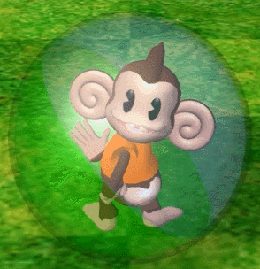

robinrobinrobinrobinrobinrobinrobinrobinrobinrobinrobinrobinrobinrobinrobinrobinrobinrobinrobinrobinrobinrobinrobinrobinrobinrobinrobinrobinrobinrobinrobinrobinrobinrobinrobinrobinrobinrobinrobinrobin
hiiiii i'm robin
my favorite color is orange
but I also like blues, greens, and pink
An artwork I like would be
TV Garden by Nam Joon Paik
Really Excited about working more with coding and web art ^_^ also working on new music!
Not excited about the impending doom.
I would definetly recommend playing super monkey ball or an old childhood video game!!

 TV Garden by Nam Joon Paik
TV Garden by Nam Joon Paik
TV Garden by Nam Joon Paik
TV Garden by Nam Joon Paik